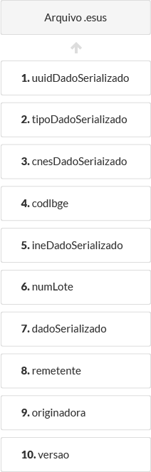
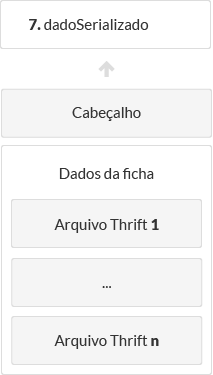

Estrutura dos arquivos
Lote
Um lote é um conjunto de arquivos de dados.
Arquivo de dados
Cada arquivo de dados representa uma ficha.
Os arquivos de dados possuem a mesma macro estrutura, referenciada como camada de transporte. A camada de transporte do arquivo de dados independe do tipo da ficha.
Quando a integração é realizada através do Apache Thrift os arquivos de dados devem ser compactados com extensão ".esus". Cada arquivo representa um dadoTransport serializado através do TBinaryProtocol.
A estrutura da Camada de Transporte é ilustrada na imagem abaixo:
 Camada de transporte - Macro estrutura de um arquivo de dados
A seguir é apresentada a definição de cada um dos elementos da Camada de transporte. O dicionário de dados da Camada de transporte, por sua vez, é apresentado no documento Camada de Transporte de Dados.
1. uuidDadoSerializado
Este campo indica o UUID do dado serializado.
2. tipoDadoSerializado
Este campo indica o tipo da ficha contida no dado serializado.
3. cnesDadoSerializado
Este campo indica o CNES da Unidade de saúde que gerou a ficha contida no dado serializado.
4. codIbge
Este campo indica o código do IBGE do município que gerou a ficha contida no dado serializado.
5. ineDadoSerializado
Este campo indica o código do equipe de saúde que gerou a ficha contida no dado serializado.
6. numLote
Este campo indica o número do lote ao qual o arquivo de dados (camada de transporte) pertence.
7. dadoSerializado
Este campo contém a serialização dos dados de uma ficha. A serialização é feita utilizando o TBinaryProtocol.
O dado serializado possui dois componentes: Cabeçalho e Dados da ficha.
 Estrutura do dado serializado
O dicionário de dados do Cabeçalho é definido no documento Cabeçalho (headerTransport);
Os Dados da ficha devem ser estruturados em arquivos Thrift conforme descrito no documento Arquivos Thrift / XSD por ficha.
Os dicionários de dados de cada tipo de ficha são definidos nos documentos:
- Ficha de Cadastro Individual;
- Ficha de Cadastro Domiciliar e Territorial;
- Ficha de Atendimento Individual;
- Ficha de Atendimento Odontológico Individual;
- Ficha de Atividade Coletiva;
- Ficha de Procedimentos;
- Ficha de Visita Domiciliar e Territorial;
- Marcadores de Consumo Alimentar;
- Ficha de Avaliação de Elegibilidade;
- Ficha de Atendimento Domiciliar;
- Ficha complementar - Síndrome neurológica por Zika / Microcefalia.
8. remetente
No caso do software de terceiro o campo remetente será igual ao campo Originadora.
9. originadora
Este campo indica qual instalação gerou/enviou o dado. Estas informações são representadas por um DadoInstalacao.
10. versao
O campo versão deve ser informado conforme definido no documento Versão.